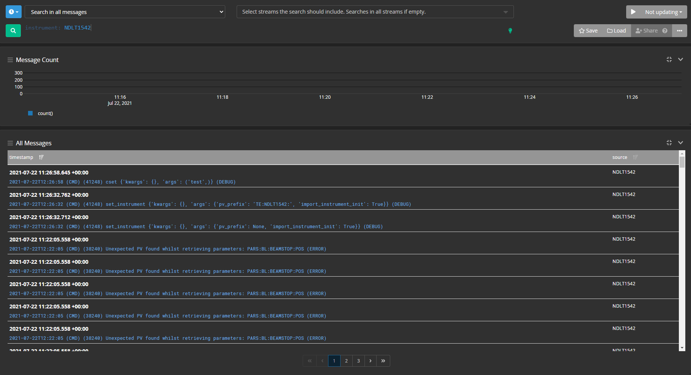

Graylog
Graylog is a logging framework which has a web interface that enables users to search logs, including custom fields on logs, historically.
The plan for using Graylog is that we dump everything into it from various sources such as the GUI, blockserver and genie_python. Currently only genie_python uses Graylog. It uses the graypy library to do add an extra logging handler.
Central Graylog server
A Graylog instance is currently running on a dedicated SCD cloud machine. This has been set up using the instructions below with a slightly modified docker-compose.yml file.
To access the web interface go to <dns alias>:9000 and enter admin and the password for the machine. Currently we are using one input per source (genie python, ibex etc) but we could make a source per instrument in the future.
Setting up Graylog locally using docker
Docker and docker compose can be used to spin up a local Graylog server with all the dependencies - to do this use this file, call it docker-compose.yml locally and run docker-compose up. You can use docker-compose down to kill Graylog and its dependencies this way as well.
You will need to add a Graylog GELF UDP input on your local instance - this can done using the web interface and can be found under System -> Inputs. Defaults can be left as they are, and an input name needs to be given, although the value of this doesn’t matter functionally.
To access the web interface on a local machine you must use 127.0.0.1:9000 - localhost:9000 does not seem to work (possibly because of Docker network issues)
Adding inputs
Graylog requires inputs to be specified before it starts taking logs. This can be done through the web interface via System -> Inputs
Searching for logs
The search bar can be used to filter out logs containing certain properties, for example the function called from genie_python or the instrument it was run on. This is done like so:
